2026年北京市朝阳区中考数学一模试卷
题数 28
full_score 111
合计 111
含问题 0err / 0warn
Q1choice2 分图选项（2分）传统建筑中的窗格不仅具有实用功能，更承载着深厚的文化寓意与审美价值，下列图形中，既是轴对称图形，又是中心对称图形的是（ ）
✓ correct: A
解：A、该图形既是轴对称图形又是中心对称图形，本选项符合题意；
B、该图形既不是轴对称图形，也不是中心对称图形，本选项不符合题意；
C、该图形不是轴对称图形，是中心对称图形，本选项不符合题意；
D、该图形是轴对称图形，不是中心对称图形，本选项不符合题意．
故选：A．
Q2choice2 分（2分）实数a，b在数轴上的对应点的位置如图所示，下列结论中正确的是（ ）
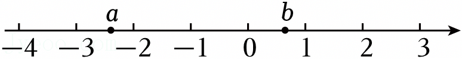
A． a＞﹣2
B． a+b＞0
C． ab＞0
D． |a|＞|b|
✓ correct: D
解：A，a＞﹣2，数轴上右边的数大于左边的数，﹣2在a的右边，∴a＜﹣2，本项错误；
B，a+b＞0，两数相加，符号由绝对值较大的数决定，a离原点远，∴|a|＞|b|，a＜0，∴a+b＜0，本项错误；
C，ab＞0，两数相乘，同号为正，异号为负，a＜0，b＞0，∴ab＜0，本项错误；
D，|a|＞|b|，绝对值指表示的数与原点的距离，离原点越远，绝对值越大，本项正确，符合题意，
故选：D．
Q3choice2 分（2分）若一个六边形的每个外角都是x°，则x的值为（ ）
✓ correct: B
解：根据题意得x°＝360°÷6＝60°，
即x＝60，
故选：B．
Q4choice2 分（2分）若关于x的一元二次方程x2﹣2x+k＝0有两个相等的实数根，则实数k的值为（ ）
✓ correct: B
解：∵关于x的一元二次方程x2﹣2x+k＝0有两个相等的实数根，
∴Δ＝0，即Δ＝（﹣2）2﹣4k＝0，
解得k＝1．
故选：B．
Q5choice2 分（2分）不透明的袋子中装有3个红球，5个绿球，这些球除颜色外无其他差别．从袋子中随机摸出1个球是红球的概率为（ ）
A． $\frac{1}{5}$
B． $\frac{1}{3}$
C． $\frac{3}{8}$
D． $\frac{5}{8}$
✓ correct: C
解：总球数为3+5＝8个，红球有3个，
用红球的个数除以球的总个数可得：摸出红球的概率为$\frac{3}{8}$，
故选：C．
Q6choice2 分（2分）2025年我国外贸进出口总额达4.547×105亿元，其中出口总额2.699×105亿元，增长了6.1%，进口总额1.848×105亿元，增长了0.5%．2025年我国贸易顺差（顺差＝出口总额﹣进口总额）用科学记数法表示为（ ）
A． 0.851×105亿元
B． 8.51×105亿元
C． 8.51×104亿元
D． 851×102亿元
✓ correct: C
解：由题意得，
2.699×105﹣1.848×105
＝0.851×105
＝8.51×104（亿元），
故选：C．
Q7choice2 分（2分）如图，O是∠BAC内部一点．若以O为圆心，OA长为半径画弧，分别与射线AB，AC交于点M，N（点M，N均不与点A重合），连接OM，ON，若∠BAC＝40°，则∠MON的大小为（ ）
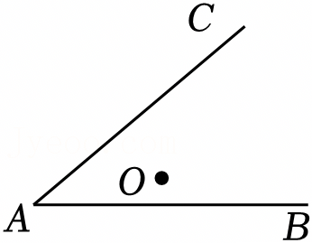
A． 100°
B． 80°
C． 50°
D． 40°
✓ correct: B
解：如图，∵∠BAC＝40°，
∴∠MON＝2∠BAC＝80°．
故选：B．
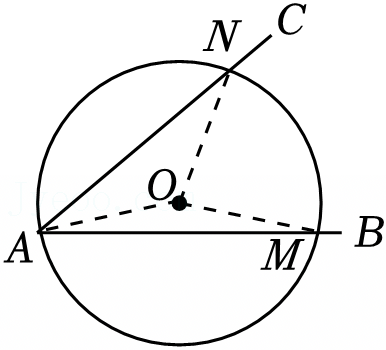
Q8choice2 分（2分）如图，在平面直角坐标系xOy中，一次函数y＝ax+3的图象与函数$y=\frac{2}{x}(x＞0)$的图象存在两个交点A，B（A，B）不重合，点A在点B的左侧），与x轴交于点C，与y轴交于点D，连接OA，OB．给出下面四个结论：
①AB一定大于AD；
②OA可能等于OB；
③△AOB的面积可能小于△BOC的面积；
④△AOD的面积一定等于△BOC的面积．
上述结论中，所有正确结论的序号为（ ）
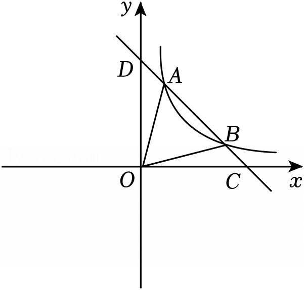
✓ correct: D
解：由ax+3$=\frac{2}{x}$得，
ax2+3x﹣2＝0．
因为两个函数图象有两个交点，
所以9﹣4×a×（﹣2）＞0，
解得a$＞-\frac{9}{8}$．
又因为a＜0，
所以$-\frac{9}{8}＜a＜0$．
设点A（x1，y1），点B（x2，y2），
则${x}_{1}+{x}_{2}=-\frac{3}{a}，{x}_{1}{x}_{2}=-\frac{2}{a}$，${y}_{1}=\frac{2}{{x}_{1}}，{y}_{2}=\frac{2}{{x}_{2}}$．
一次函数y＝ax+3与x轴交于点C（$-\frac{3}{a}，0$），与y轴交于点D（0，3）．
因为AD2$={x}_{1}^{2}+({y}_{1}-3{)}^{2}=$${x}_{1}^{2}({a}^{2}+1)$，
AB2$=({x}_{2}-{x}_{1}{)}^{2}+({y}_{2}-{y}_{1}{)}^{2}=$（x2﹣x1）2（a2+1），
当a＝﹣1时，方程为﹣x2+3x﹣2＝0，
此时x1＝1，x2＝2，
则AD2＝AB2，
所以AD＝AB．
故①错误；
若OA＝OB，
则${x}_{1}^{2}+{y}_{1}^{2}={x}_{2}^{2}+{y}_{2}^{2}$，
即${x}_{1}^{2}+\frac{4}{{x}_{1}^{2}}={x}_{2}^{2}+\frac{4}{{x}_{2}^{2}}$，
整理得，$({x}_{1}^{2}-{x}_{2}^{2})(1-\frac{4}{{x}_{1}^{2}{x}_{2}^{2}})=0$．
因为x1≠x2，
所以${x}_{1}^{2}{x}_{2}^{2}=4$，
则x1x2＝2（舍负），
所以$-\frac{2}{a}=2$，
解得a＝﹣1，
所以当a＝﹣1时，OA＝OB，
即OA可能等于OB．
故②正确；
因为${S}_{△AOB}={S}_{△ODB}-{S}_{△ODA}=\frac{1}{2}⋅OD⋅({x}_{2}-{x}_{1})=$$\frac{3}{2}({x}_{2}-{x}_{1})$，
${S}_{△BOC}=\frac{1}{2}⋅OC⋅{y}_{2}=-\frac{3}{2a}{y}_{2}=$$-\frac{3a{x}_{2}+9}{2a}$，
则由$\frac{3}{2}({x}_{2}-{x}_{1})＜-\frac{3a{x}_{2}+9}{2a}$得，
${x}_{2}-{x}_{1}＜-{x}_{2}-\frac{3}{a}$，
因为${x}_{1}+{x}_{2}=-\frac{3}{a}$，
所以x2﹣x1＜﹣x2+x1+x2，
则x2＜2x1，
所以当x2＜2x1时，△AOB的面积小于△BOC的面积，
即△AOB的面积可能小于△BOC的面积．
故③正确；
由上述过程可知，
${S}_{△AOD}=\frac{3}{2}{x}_{1}$，${S}_{△BOC}=\frac{1}{2}⋅(-\frac{3}{a})⋅{y}_{2}$．
因为${x}_{1}+{x}_{2}=-\frac{3}{a}$，
所以${S}_{△BOC}=\frac{1}{2}({x}_{1}+{x}_{2}){y}_{2}=$$\frac{1}{2}{x}_{1}{y}_{2}+1=$$\frac{1}{2}{x}_{1}(a{x}_{2}+3)+1=$$\frac{1}{2}a{x}_{1}{x}_{2}+\frac{3}{2}{x}_{1}+1=$$\frac{1}{2}a⋅(-\frac{2}{a})+\frac{3}{2}{x}_{1}+1=\frac{3}{2}{x}_{1}$，
所以S△AOD＝S△BOC．
故④正确．
故选：D．
Q9fill_blank3 分（2分）若$\sqrt{x-1}$在实数范围内有意义，则实数x的取值范围是 ．
解：由题意可得$\sqrt{x-1}≥0$，
∴x﹣1≥0，
∴x≥1，
故答案为：x≥1．
Q10fill_blank3 分（2分）分解因式：3a2+6ab+3b2＝ ．
解：3a2+6ab+3b2＝3（a2+2ab+b2）＝3（a+b）2．
故答案为：3（a+b）2．
Q11fill_blank3 分（2分）方程$\frac{2}{x+3}=$$\frac{1}{x}$的解为 ．
解：方程两边同时乘以x（x+3）得：
2x＝x+3，
解得x＝3，
检验：x＝3时，x（x+3）≠0，
∴方程的解为x＝3．
故答案为：x＝3．
Q12fill_blank3 分（2分）能说明命题“若x＞y，则x2＞y2”是假命题的一组实数x，y的值为x＝ ，y＝ ．
解：当x＝﹣1，y＝﹣2时，x＞y，而x2＜y2，
说明命题“若x＞y，则x2＞y2”是假命题，
故答案为：﹣1；﹣2（答案不唯一）．
Q13fill_blank3 分（2分）某集团校有20000名学生．为了解这些学生单次使用电子屏幕时长的分布情况，从中随机抽取了1000名学生，获得他们单次使用电子屏幕时长的数据x（单位：min），数据整理如下：
根据以上信息，估计该集团校20000名学生单次使用电子屏幕时长不超过15min的人数为 ．
解：由表格可得，抽取的1000名学生中，单次使用电子屏幕时长不超过15min的人数为650，
该组数据的频率为$\frac{650}{1000}=$0.65，
∴估计该集团校20000名学生单次使用电子屏幕时长不超过15min的人数为0.65×20000＝13000，
故答案为：13000．
Q14fill_blank3 分（2分）声音在空气中传播的速度随温度的变化而变化，科学家测得一定温度下声音在空气中传播的速度v（m/s）与温度t（℃）部分对应数值如表所示：
研究发现，在一定条件下，v是t的一次函数，函数关系为v＝at+b（a，b为常数，且a≠0）．当温度t为15℃时，声音传播的速度v为 m/s．
解：将t＝0，v＝331和t＝10，v＝337分别代入v＝at+b，
得$\left\{\begin{matrix} b=331 \\ 10a+b=337 \end{matrix}\right.$，
解得$\left\{\begin{matrix} a=0.6 \\ b=331 \end{matrix}\right.$，
∴v与t之间的函数关系式为v＝0.6t+331，
当t＝15时，v＝0.6×15+331＝340，
∴当温度t为15℃时，声音传播的速度v为340m/s．
故答案为：340．
Q15fill_blank3 分（2分）如图，在平面直角坐标系xOy中，正方形ABCD的顶点A，B在x轴上，点D的坐标为（﹣1，5），CD与y轴交于点E，点F在CD边上，将△BCF沿直线BF翻折，得到△BGF．若点G恰好落在y轴上，则△EFG的面积为 ．
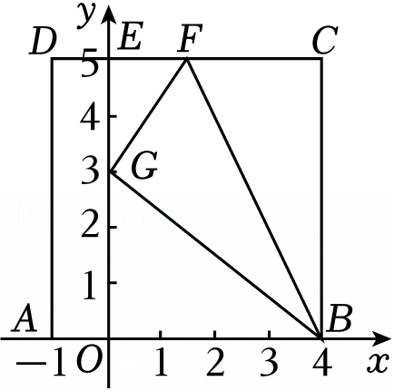
解：∵点D的坐标为（﹣1，5），四边形ABCD是正方形，
∴点A的坐标为（﹣1，0），AD＝5，
∴AB＝BC＝CD＝AD＝5，OA＝1，
∴OB＝4，
由折叠可知BG＝BC＝5，
∴$OG=\sqrt{B{G}^{2}-O{B}^{2}}=\sqrt{{5}^{2}-{4}^{2}}=3$，
∴OG＝3，GE＝OE﹣OG＝5﹣3＝2，
设EF＝x，则有CF＝CD﹣DE﹣EF＝5﹣1﹣x＝4﹣x，由折叠可知GF＝CF＝4﹣x，
∵EF2+EG2＝GF2∴x2+22＝（4﹣x）2，
解得：$x=\frac{3}{2}$，
∴$EF=\frac{3}{2}$，
∴${S}_{△EFG}=\frac{1}{2}EF⋅EG=\frac{1}{2}×2×\frac{3}{2}=\frac{3}{2}$，
故答案为：$\frac{3}{2}$．
Q16fill_blank3 分（2分）某学校大力普及校园足球运动，在各年级分别举行了足球比赛，要求每两支参赛球队均要比赛一场，根据积分进行排名，比赛的积分规则为每胜一场得3分，每负一场得0分，每平一场各得1分，该校九年级共有5支球队参赛，最终各支球队的积分均不相同，积分最低的球队积1分．
（1）积分最低的球队负 场；
（2）积分排名第三的球队最低积 分．
解：每两支参赛球队均要比赛一场，每支球队共比赛5﹣1＝4 场．
（1）已知积分最低的球队积1分，根据积分规则，1分只能是0×3+1×1+3×0＝1，即该队0胜1平3负，因此负场数为3，
故答案为：3；
（2）设五支球队按积分从高到低为A，B，C，D，E，其中E积1分，要使C积分最低，需让A，B积分尽可能高．
安排A四战全胜，积4×3＝12分；B负于A，战胜C，D，E，积3×3＝9分，满足积分不同．
再安排比赛结果：E负于A，B，C，平D，得1分，符合要求；D负于A，B，平C，E，得1+1＝2分；C负于A，B，平D，胜E，得1+3＝4分．
此时积分排序为12，9，4，2，1，所有积分均不同，符合题意．若C积3分，则第四位只能是2分，无论如何安排，都会出现积分重复或第三名为更高积分的球队，因此C最低积4分，
故答案为：4．
Q17problem_solving5 分（5分）计算：${(π-3)}^{0}-4cos45°+\sqrt{8}+|\sqrt{3}-1|$．
解：原式$=1-4×\frac{\sqrt{2}}{2}+2\sqrt{2}+\sqrt{3}-1$
$=1-2\sqrt{2}+2\sqrt{2}+\sqrt{3}-1$
$=\sqrt{3}$．
Q18problem_solving5 分（5分）解不等式组：$\left\{\begin{matrix} 3(x-1)＜2x+1 \\ \frac{4x-2}{3}＞x \end{matrix}\right.$．
解：由3（x﹣1）＜2x+1得，
x＜4，
由$\frac{4x-2}{3}＞x$得，
x＞2，
所以不等式组的解集为2＜x＜4．
Q19problem_solving5 分（5分）已知a﹣b﹣3＝0，求代数式$\frac{b}{2a+2b}⋅\frac{{a}^{2}-{b}^{2}}{b}$的值．
解：∵a﹣b﹣3＝0，
∴a﹣b＝3，
∴$\frac{b}{2a+2b}⋅\frac{{a}^{2}-{b}^{2}}{b}$
$=\frac{b}{2(a+b)}$•$\frac{(a+b)(a-b)}{b}$
$=\frac{a-b}{2}$
$=\frac{3}{2}$．
Q20problem_solving6 分（6分）如图，在▱△ABCD中，点E在CD边上，∠CBE＝∠A，过点C作BE的平行线，交AB的延长线于点F．
（1）求证：四边形BECF是菱形；
（2）连接EF，若AB＝6，DE＝2，∠A＝60°，求EF的长．
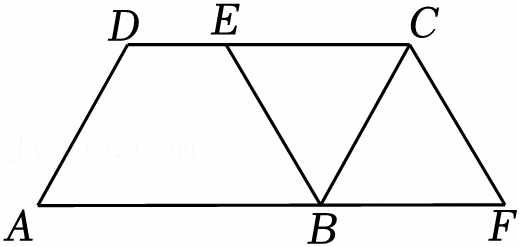
（1）证明：∵四边形ABCD是平行四边形，
∴∠BCD＝∠A，CD∥BC，
∴CE∥BF，
∵BE∥CF，
∴四边形BECF是平行四边形，
∵∠CBE＝∠A，
∴∠CBE＝∠BCE，
∴BE＝CE，
∴四边形BECF是菱形；
（2）解：连接EF交BC于O，
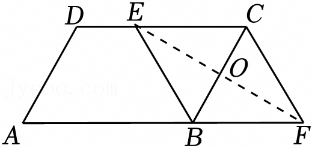
∵四边形BECF是菱形，
∴EF⊥BC，
∴∠BOE＝90°，
∵四边形ABCD是平行四边形，
∴CD＝AB＝6，
∵DE＝2，
∴CE＝BE＝6﹣2＝4，
∵∠A＝60°，
∴∠EBO＝60°，
∴OE$=\frac{\sqrt{3}}{2}$BE$=\frac{\sqrt{3}}{2}×$4＝2$\sqrt{3}$，
∴EF＝2OE＝4$\sqrt{3}$．
Q21problem_solving6 分（5分）在平面直角坐标系xOy中，函数y＝kx+b（k≠0）的图象与x轴交于点（﹣2，0），与y轴交于点（0，2）．
（1）求k，b的值；
（2）当x＞2时，对于x的每一个值，函数y＝mx﹣1（m≠0）的值既小于函数y＝kx+b的值，也大于0，直接写出m的取值范围．
解：（1）∵一次函数y＝kx+b（k≠0）的图象与x轴交于点（﹣2，0），与y轴交于点（0，2），
∴$\left\{\begin{matrix} -2k+b=0 \\ b=2 \end{matrix}\right.$，
解得$\left\{\begin{matrix} k=1 \\ b=2 \end{matrix}\right.$，
∴k＝1，b＝2；
（2）由（1）可知，一次函数y＝kx+b的解析式为y＝x+2，
一次函数y＝mx﹣1过点（0，﹣1），
如图：
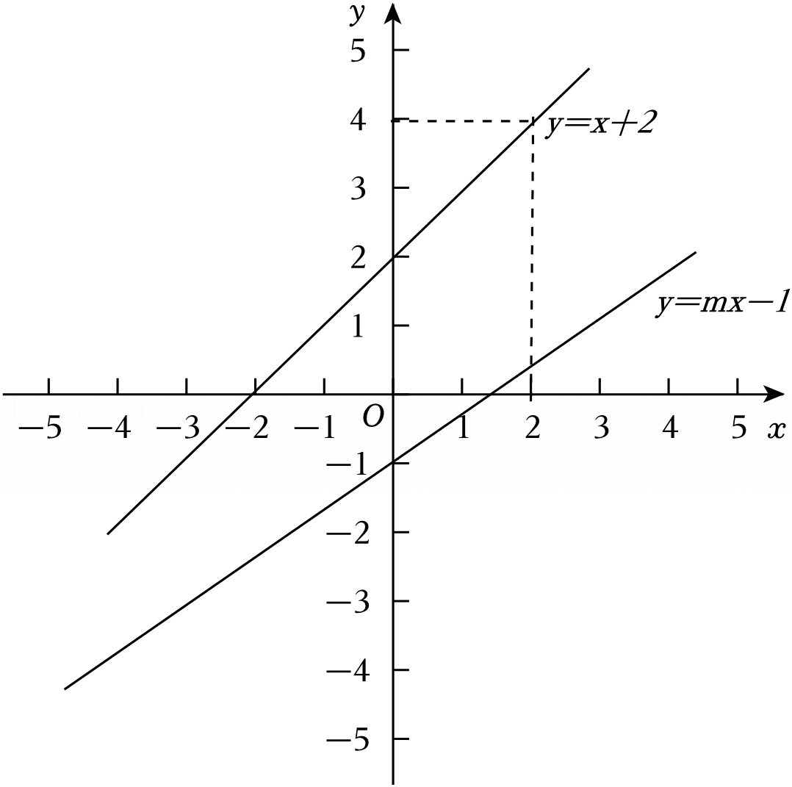
∵当x＞2时，对于x的每一个值，函数y＝mx﹣1（m≠0）的值既小于函数y＝kx+b的值，也大于0，
∴0＜mx﹣1＜x+2（x＞2），
①∵mx﹣1＜x+2，
∴（m﹣1）x＜3，
当m﹣1＞0，即m＞1，则x$＜\frac{3}{m-1}$，无法满足x＞2，舍去；
当m﹣1＝0，即m＝1，则0＜3恒成立；
当m﹣1＜0，即m＜1，则x$＞\frac{3}{m-1}$，要对x＞2恒成立，需$\frac{3}{m-1}≤$2，
解得m$≤\frac{5}{2}$，
综上，m≤1；
②mx﹣1＞0，
∴mx＞1，
当m＜0时，x$＜\frac{1}{m}$，无法满足x＞2，舍去；
当m＞0时，x$＞\frac{1}{m}$，需要对x＞2恒成立，
∴$\frac{1}{m}≤$2，
解得m$≥\frac{1}{2}$；
∴m的取值范围为：$\frac{1}{2}≤$m≤1．
Q22problem_solving6 分（5分）某校重视学生的传统名著阅读，该校图书管理员在“传统文化宣传月”期间为学校购买了甲种名著8本，乙种名著3本，共支付300元．若乙种名著的单价是甲种名著单价的$\frac{3}{2}$倍，求甲、乙两种名著的单价．
解：设甲种名著的单价是x元，乙种名著的单价是y元，
由题意得：$\left\{\begin{matrix} 8x+3y=300 \\ y=\frac{3}{2}x \end{matrix}\right.$，
解得：$\left\{\begin{matrix} x=24 \\ y=36 \end{matrix}\right.$，
答：甲种名著的单价是24元，乙种名著的单价是36元．
Q23problem_solving6 分（6分）某学校举办了七、八年级智能机器人应用比赛，比赛包括机器人基础知识、结构搭建、编程控制、综合应用四个分项，采用百分制记录比赛成绩（成绩取整数，单位：分），比赛分为两个阶段．
（1）第一阶段为机器人基础知识比赛，该校七、八两个年级智能机器人应用代表队各有8名学生参赛，对他们的成绩进行描述和分析．下面给出了部分信息．
a．七、八年级参赛学生基础知识比赛成绩的折线图：
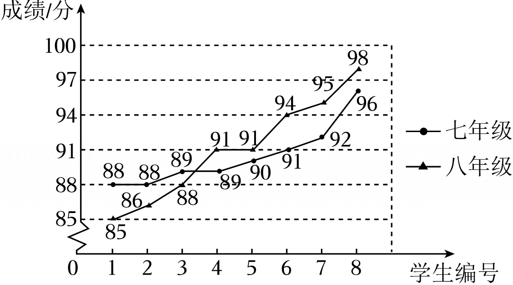
b．七、八年级参赛学生基础知识比赛成绩的中位数分别为m，91，方差分别为n，18．
根据以上信息，回答下列问题：
①m的值为 ；
②n 18；（填“＞”“＝”或“＜”）
（2）七、八年级各选派基础知识比赛成绩前三名的学生，参加第二阶段结构搭建、编程控制、综合应用的比赛，部分数据如下：
①表中p的值为 ；
②根据比赛成绩，学校对这六名学生进行最后的排序，排序标准为：平均数较大的优先；若平均数相等，则综合应用成绩较高的优先；若综合应用成绩也相等，则方差较小的优先．按上述标准排序后，这六名学生的排序由高到低依次为D，E，A，B，C，F，则表中t所有可能的值为 ．
解：（1）①七年级参赛学生基础知识比赛成绩的中位数m$=\frac{89+90}{2}=$89.5，
故答案为：89.5；
②由折线统计图可知，七年级比赛成绩的波动比八年级小，即七年级比赛成绩的方差小于八年级的方差，即n＜18，
故答案为：＜；
（2）①p$=\frac{98+90+92+96}{4}=$94，
故答案为：94；
②∵这六名学生的排序由高到低依次为D，E，A，B，C，F，
∴92.75$≤\frac{96+92+88+t}{4}≤$93.25，
即371≤276+t≤373，
解得95≤t≤97，
∵t为整数，
∴t＝95或96或97，
当t＝96或97时，学生的方差均大于学生B的方差，故96或97均符合题意；
当t＝95时，C，F的平均数相同，但C的方差比F大，所以95不符合题意．
故答案为：96，97．
Q24problem_solving6 分（6分）如图，在△ABC中，∠ABC＝90°，点O在AB边上，以O为圆心，OA为半径作圆，分别与AB，AC边交于点D，E，连接BE，BE＝BC．
（1）求证：直线BE是⊙O的切线；
（2）过点A作AM⊥BE，交BE的延长线于点M，AM交⊙O于点N，若$\frac{AO}{ME}=\frac{5}{4}$，AN＝6，求BC的长．
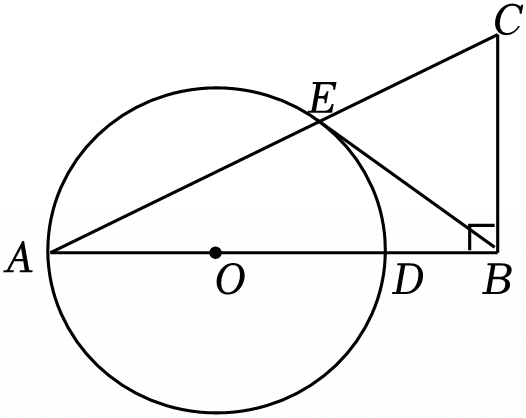
（1）证明：连接OE，
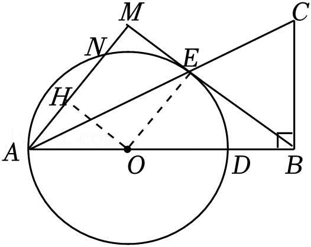
∵AO＝EO，
∴∠A＝∠AEO，
∵BE＝BC，
∴∠C＝∠BEC，
∵∠ABC＝90°，
∴∠A+∠C＝90°，
∴∠AEO+∠BEC＝90°，
∴∠BEO＝90°，
∵OE是⊙O的半径，
∴直线BE是⊙O的切线；
（2）解：过O作OH⊥AN于H，
∴AH＝HN$=\frac{1}{2}$AN＝3，
∵AM⊥BE，
∴∠M＝∠OEM＝∠OHM＝90°，
∴四边形OHME是矩形，
∴OE＝MH，OH＝EM，
∵$\frac{AO}{ME}=\frac{5}{4}$，∴设AO＝5k，ME＝4k
∴OH＝4k，
∴AH$=\sqrt{O{A}^{2}-O{H}^{2}}=$3k＝3，
∴k＝1，
∴OA＝OE＝HM＝5，EM＝OH＝4，
∵OE∥AM，
∴△OEB∽△AMB，
∴$\frac{BE}{BM}=\frac{OE}{AM}=\frac{OB}{AB}$，
∴$\frac{BE}{BE+4}=$$\frac{5}{8}$，
∴BE$=\frac{20}{3}$，
∴BC＝BE$=\frac{20}{3}$．
Q25problem_solving6 分（5分）小明帮助家长进行理财分析，他发现在一定时期内，有三种投资方案可供选择，从投资当日起，第x天时，选择方案一、方案二、方案三当天所得回报分别为y1，y2，y3（单位：元），部分数据如下：
通过分析数据，发现可以用函数刻画y1与x，y2与x，y3与x之间的关系．在平面直角坐标系xOy中，分别描出每个方案中各数对所对应的点，并根据变化趋势用平滑的曲线连接，方案一、方案二对应的曲线C1，C2如图所示：
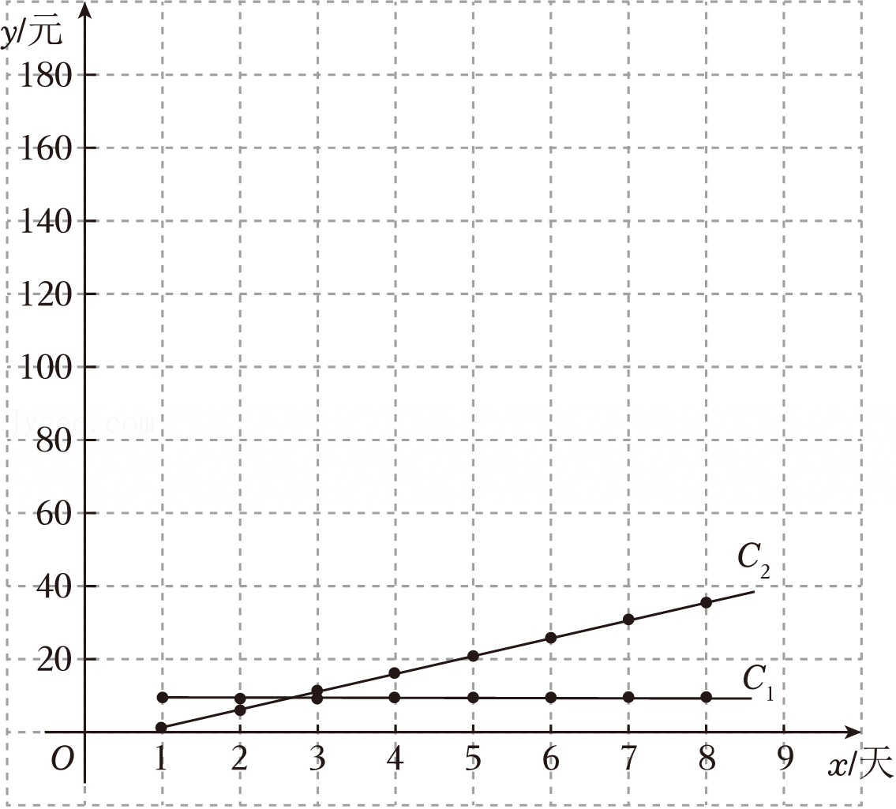
（1）表中a的值为 ；
（2）在给出的平面直角坐标系中，画出方案三对应的曲线C3；
（3）根据以上信息，解决下列问题：
①要使前4天的投资总回报最高，应选择方案 ；（填写“一”“二”或“三”）
②可以推断，从第 天开始，选择方案三的投资总回报超过同时选择方案一与方案二的投资总回报之和．
解：（1）由图象可得，y2是关于x的一次函数，
∴设解析式为y2＝kx+b，
当x＝1，y2＝1，x＝3，y2＝11，
∴$\left\{\begin{matrix} k+b=1 \\ 3k+b=11 \end{matrix}\right.$，
解得$\left\{\begin{matrix} k=5 \\ b=-4 \end{matrix}\right.$，
∴y2＝5x﹣4，
∴当x＝2时，a＝2×5﹣4＝6，
故答案为：6；
（2）如图，曲线C3即为所求；
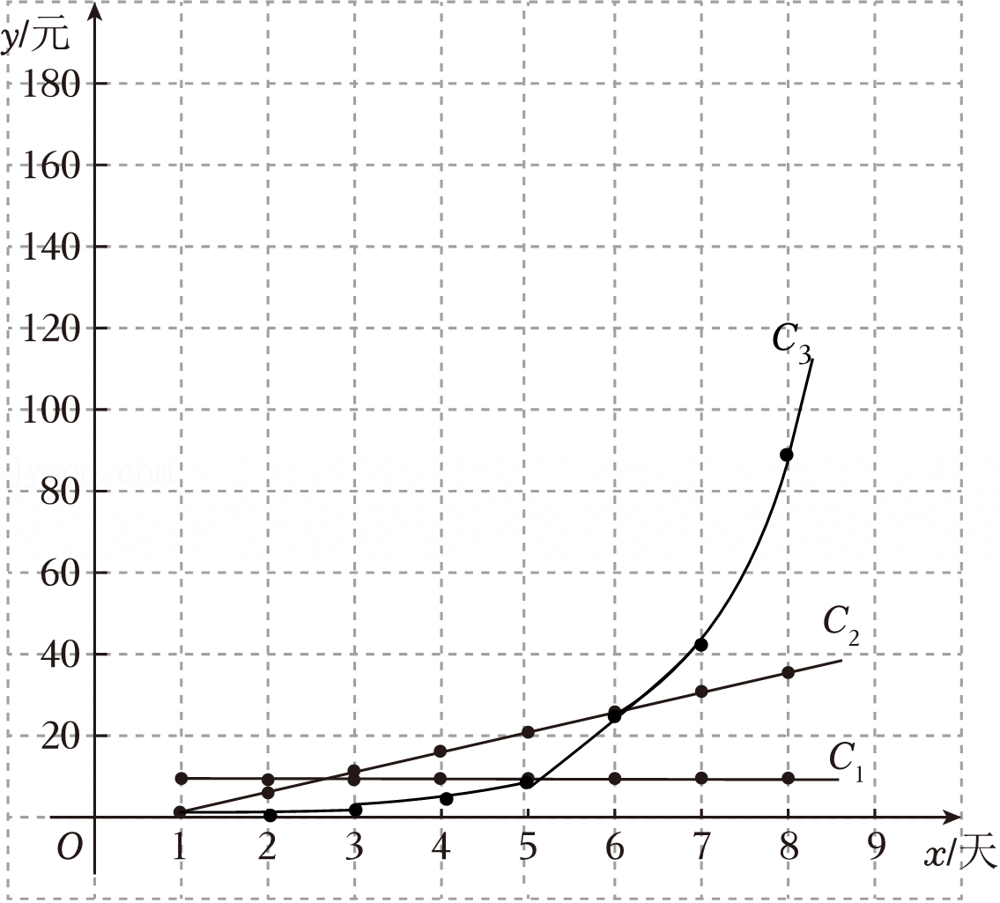
（3）①前4天方案一的投资总回报：10×4＝40（元）；
前4天方案二的投资总回报：1+6+11+16＝34（元）；
前4天方案三的投资总回报：0.5+1.1+2.4+5.1＝9.1（元），
因为40＞34＞9.1，
故选方案一，
故答案为：一；
②第八天，方案二的投资总回报为1+6+11+16+21+26+31+36＝148（元），
方案一的投资总回报为：10×8＝80（元）；
则方案一、方案二的投资总回报为80+148＝228（元）；
方案三的投资总回报为0.5+1.1+2.4+5.1+10.6+21.7+44+88.7＝174.1（元），
此时174.1＜228；
第九天方案二的投资总回报为148+（5×9﹣4）＝189（元），
方案一的投资总回报为：10×9＝90（元）；
则第九天方案一、方案二的投资总回报为90+189＝279（元）；
对于方案三的数据，可发现后一天的数据大概是前一天数据的两倍，则第九天投资回报约为177.4元，
那么第九天方案三的投资总回报约为174.1+177.4＝351.5（元），
因为351.5＞279，
故第九天开始选择方案三的投资总回报超过同时选择方案一与方案二的投资总回报之和．
故答案为：9．
Q26problem_solving6 分（6分）在平面直角坐标系xOy中，点M（x1，y1），N（x2，y2）在抛物线y＝ax2﹣a2x（a≠0）上．
（1）求该抛物线的对称轴（用含a的式子表示）；
（2）若对于x1+x2＝0，2＜x2＜3，总有y1，y2同号，且y1＞y2，求a的取值范围．
解：（1）抛物线的对称轴为直线x$=-\frac{b}{2a}=$$-\frac{-{a}^{2}}{2a}=$$\frac{a}{2}$；
（2）∵x1+x2＝0，2＜x2＜3，
∴x2＝﹣x1，
∴﹣3＜x1＜﹣2，抛物线过点（0，0）和点（a，0），
①当a＞0时，如图1所示，
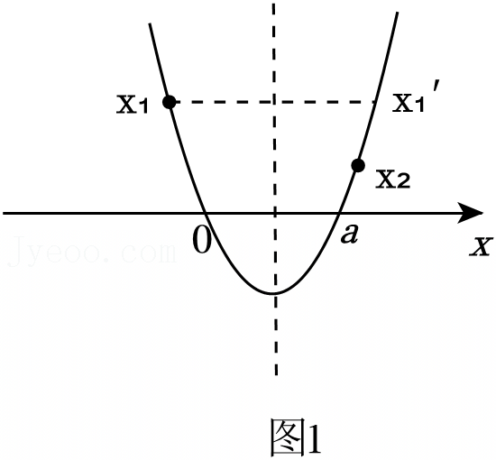
∵y1＞0，y1，y2同号，
∴y2＞0，
∴a≤2，
∵x1的对称点横坐标为x1'＝a﹣x1，且y1＞y2，
∴x2＜a﹣x1，即x1+x2＜a，
故0＜a≤2；
②当a＜0时，如图2所示，
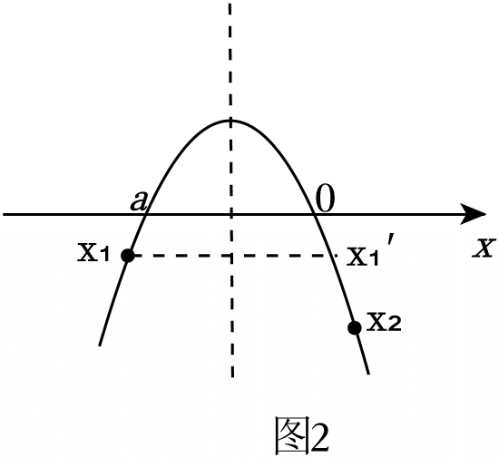
∵y2＜0，y1，y2同号，
∴y1＜0，
∴x1＜a，即a≥﹣2，
又∵x1的对称点横坐标为x1'＝a﹣x1，且y1＞y2，
∴a﹣x1＜x2，即x1+x2＞a，
∴a＜0，
故﹣2≤a＜0，
综上，a的取值范围为﹣2≤a≤2且a≠0．
Q27problem_solving7 分（7分）如图，在△ABC中，AB＝AC，∠BAC＝α，∠ACD＝90°，将线段AD绕点A顺时针旋转α得到线段AE，连接DE交BC于点F．
（1）根据题意补全图形，并证明∠BAE＝∠CAD；
（2）过点D作直线BC的垂线，垂足为G，用等式表示线段BC，FG之间的数量关系，并证明．
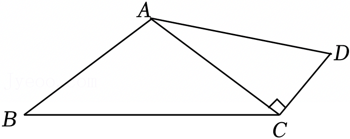
解：（1）图形如图所示：
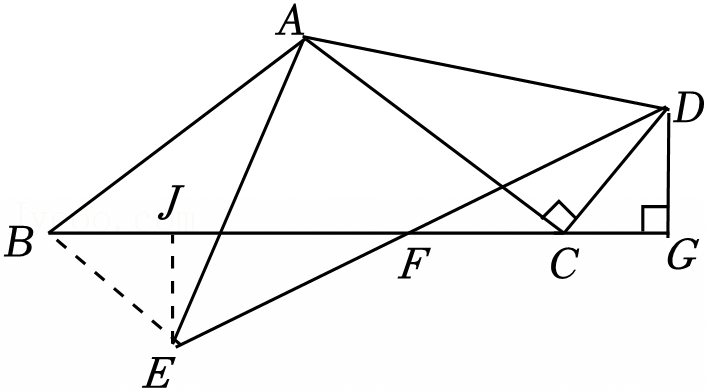
理由：∵∠BAC＝α，∠DAE＝α，
∴∠BAC＝∠DAE，
∴∠BAE＝∠CAD；
（2）结论：BC＝2FG．
理由：如图，过点E作EJ⊥BC于点J．
∵AB＝AC，∠BAE＝∠CAD，AE＝AD，
∴△BAE≌△CAD（SAS），
∴BE＝CD，∠ABE＝∠ACD＝90°，
∵AB＝AC，
∴∠ABC＝∠ACB，
∵∠EBJ+∠ABC＝90°，∠ACB+∠DCG＝90°，
∴∠EBJ＝∠DCG，
∵DG⊥BC，EJ⊥BC，
∴∠BJE＝∠G＝90°，
∴△BJE≌△CGD（AAS），
∴BJ＝CG，EJ＝DG，
∴BC＝JG，
∵∠EJF＝∠G＝90°，EJ＝DG，∠EFJ＝∠DFG，
∴△EJF≌△DGF（AAS），
∴FJ＝FG，
∴FG$=\frac{1}{2}$JG$=\frac{1}{2}$BC，
∴BC＝2FG．
Q28problem_solving7 分（7分）在平面直角坐标系xOy中，点A（0，a），B（3，4），OB的半径为1，线段PQ的长度为1，将线段PQ绕点A逆时针旋转90°，得到线段MN，若线段MN与⊙B有公共点，则称线段PQ为点A的旋转线段，并称AM，AN的较小值为线段PQ关于点A的旋转距离，记为d．
（1）如图，a＝3．
①点C1（0，0），D1（1，0），C2（2，0），D2（3，0），C3（﹣2，0），D3（﹣1，0），在线段C1D1，C2D2，C3D3中，点A的旋转线段为 ；
②点$C(b，0)，D(b+\frac{\sqrt{3}}{2}，\frac{1}{2})$，若线段CD为点A的旋转线段，直接写出b的取值范围；
（2）已知线段CD平行于x轴，中点为（a﹣3，a﹣3），若线段CD为点A的旋转线段，直接写出a的取值范围及d的最大值．
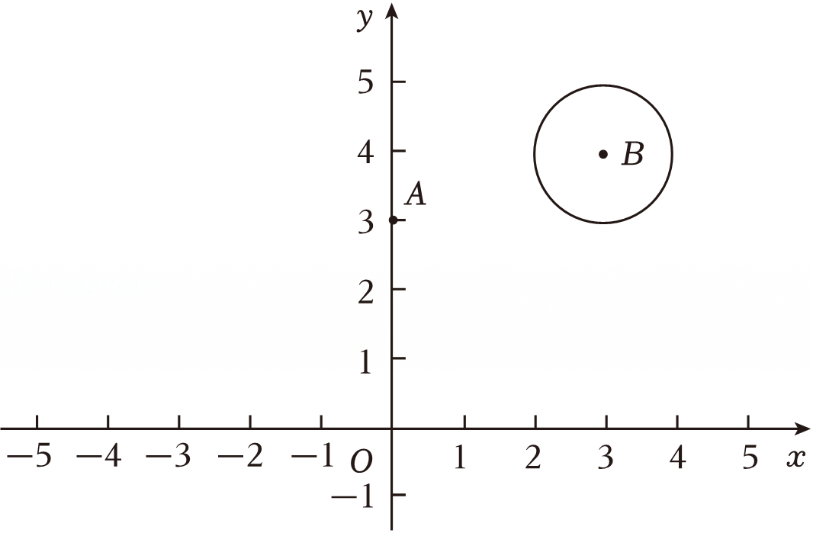
2026年北京市朝阳区中考数学一模试卷
解：（1）①逆向思维，将⊙B绕A（0，3）顺时针旋转90°得到⊙B′，其中B′（1，0），
若线段与⊙B'有交点，即为点A的旋转线段，
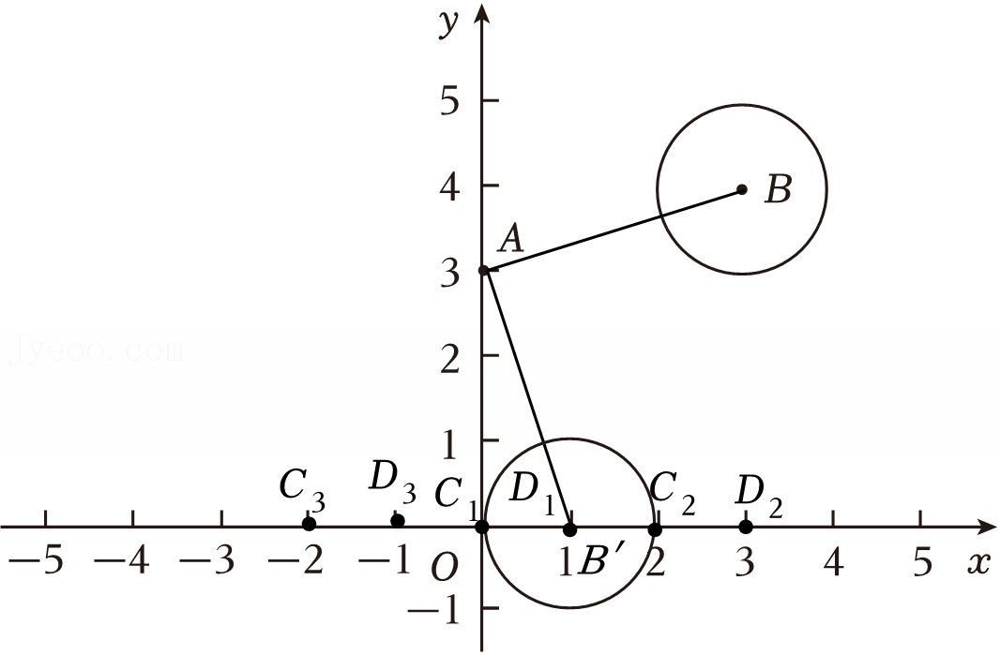
显然C1D1与C2D2符合题意．
故答案为：C1D1，C2D2；
②如图，
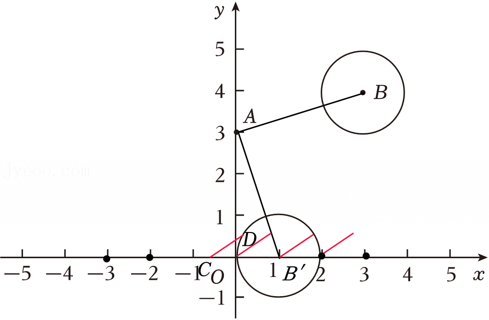
若CD与⊙B'有交点，找到临界位置即可，分别为D在⊙B′上与C在⊙B′上．
当D在⊙B′上时，
则$(b+\frac{\sqrt{3}}{2}-1{)}^{2}+(\frac{1}{2}{)}^{2}={1}^{2}$，
解得b＝1或$1-\sqrt{3}$；
当C在⊙B'上时，b＝0或2，
∴$1-\sqrt{3}≤b≤0$或1≤b≤2．
（2）∵CD∥x轴，中点为（a﹣3，a﹣3），且CD＝1，
∴$C(a-\frac{7}{2}，a-3)$，$D(a-\frac{5}{2}，a-3)$，
当CD绕点A逆时针旋转90°，其中点对应点为（3，2a﹣3），
∴$C′(3，2a-\frac{7}{2})$，$D′(3，2a-\frac{5}{2})$，
若C′D′与⊙B有交点，则$2a-\frac{7}{2}≤3≤2a-\frac{5}{2}$或$2a-\frac{7}{2}≤5≤2a-\frac{5}{2}$，
即$\frac{11}{4}≤a≤\frac{13}{4}$或$\frac{15}{4}≤a≤\frac{17}{4}$，
∵AC′与AD′横向距离都是3，
∴只需要比较其纵向距离即可判断A'C'与A'D'长度大小．
过点A作AH⊥C′D′，则H（3，a），
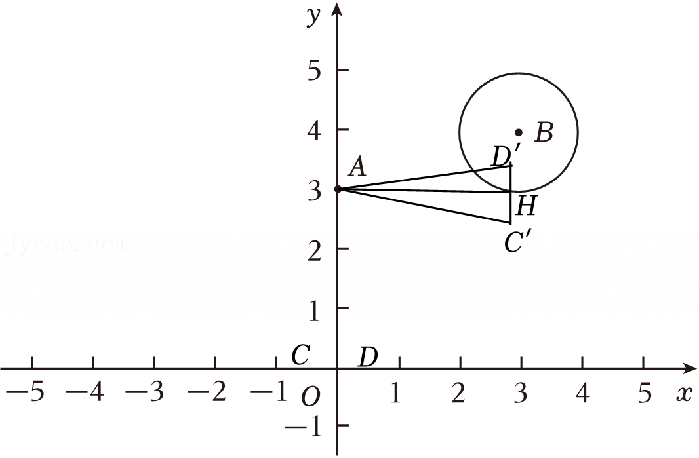
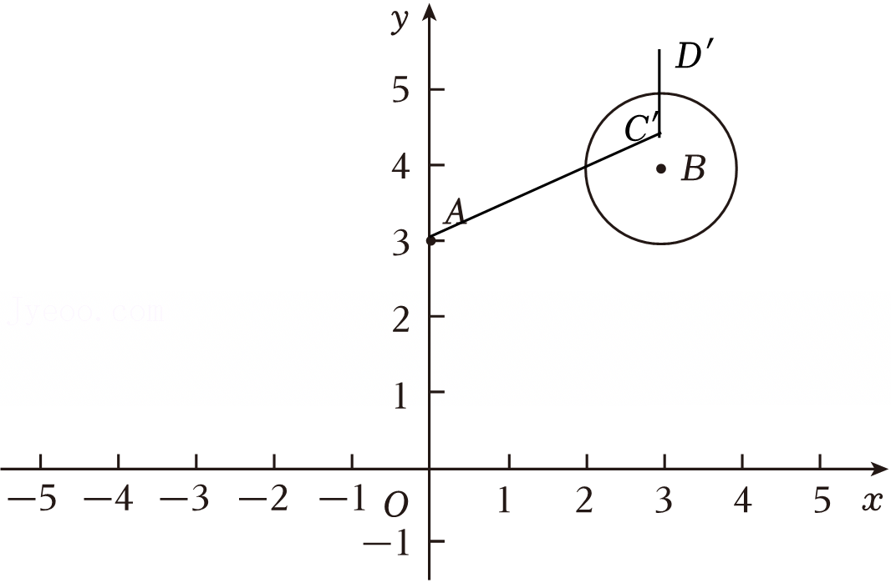
当$\frac{11}{4}≤a≤\frac{13}{4}$，
若a＝2a﹣3时，即a＝3，
此时H到C′，D′距离相同，
此时有${d}_{max}=\sqrt{{3}^{2}+(\frac{1}{2}{)}^{2}}=\frac{\sqrt{37}}{2}$；
当$\frac{15}{4}≤a≤\frac{17}{4}$，此时a＜2a﹣3，此时AC′＜AD′；
当$a=\frac{17}{4}$时，有${d}_{max}=\sqrt{{3}^{2}+(\frac{17}{4}-\frac{7}{2}{)}^{2}}=\frac{\sqrt{153}}{4}=\frac{3\sqrt{17}}{4}$．
综上，$\frac{11}{4}≤a≤\frac{13}{4}$或$\frac{15}{4}≤a≤\frac{17}{4}$，d的最大值为$\frac{3\sqrt{17}}{4}$．
声明：试题解析著作权属菁优网所有，未经书面同意，不得复制发布日期：2026/5/7 14:15:07；用户：smy138xyhcom；邮箱：smy138@xyh.com；学号：68048298
| 分组 | x≤15 | 15＜x≤20 | 20＜x≤25 | 25＜x≤30 | x＞30 |
|---|---|---|---|---|---|
| 人数 | 650 | 157 | 101 | 63 | 29 |
| 温度t | 0 | 10 | 20 |
|---|---|---|---|
| 声音传播的速度v | 331 | 337 | 343 |
| 年级 | 学生 | 基础知识 | 结构搭建 | 编程控制 | 综合应用 | 平均数 | 方差 |
|---|---|---|---|---|---|---|---|
| 七年级 | A | 91 | 93 | 96 | 95 | 93.75 | 3.6875 |
| | B | 92 | 92 | 92 | 97 | 93.25 | 4.6875 |
| | C | 96 | 92 | 88 | t | | |
| 八年级 | D | 98 | 90 | 92 | 96 | p | 10 |
| | E | 95 | 92 | 93 | 95 | 93.75 | 1.6875 |
| | F | 94 | 91 | 91 | 95 | 92.75 | 3.1875 |
| x | 1 | 2 | 3 | 4 | 5 | 6 | 7 | 8 | … |
|---|---|---|---|---|---|---|---|---|---|
| y1 | 10 | 10 | 10 | 10 | 10 | 10 | 10 | 10 | … |
| y2 | 1 | a | 11 | 16 | 21 | 26 | 31 | 36 | … |
| y3 | 0.5 | 1.1 | 2.4 | 5.1 | 10.6 | 21.7 | 44 | 88.7 | … |
| 题号 | 1 | 2 | 3 | 4 | 5 | 6 | 7 | 8 |
|---|---|---|---|---|---|---|---|---|
| 答案 | A | D | B | B | C | C | B | D |
| 分组 | x≤15 | 15＜x≤20 | 20＜x≤25 | 25＜x≤30 | x＞30 |
|---|---|---|---|---|---|
| 人数 | 650 | 157 | 101 | 63 | 29 |
| 温度t | 0 | 10 | 20 |
|---|---|---|---|
| 声音传播的速度v | 331 | 337 | 343 |
| 年级 | 学生 | 基础知识 | 结构搭建 | 编程控制 | 综合应用 | 平均数 | 方差 |
|---|---|---|---|---|---|---|---|
| 七年级 | A | 91 | 93 | 96 | 95 | 93.75 | 3.6875 |
| | B | 92 | 92 | 92 | 97 | 93.25 | 4.6875 |
| | C | 96 | 92 | 88 | t | | |
| 八年级 | D | 98 | 90 | 92 | 96 | p | 10 |
| | E | 95 | 92 | 93 | 95 | 93.75 | 1.6875 |
| | F | 94 | 91 | 91 | 95 | 92.75 | 3.1875 |
| x | 1 | 2 | 3 | 4 | 5 | 6 | 7 | 8 | … |
|---|---|---|---|---|---|---|---|---|---|
| y1 | 10 | 10 | 10 | 10 | 10 | 10 | 10 | 10 | … |
| y2 | 1 | a | 11 | 16 | 21 | 26 | 31 | 36 | … |
| y3 | 0.5 | 1.1 | 2.4 | 5.1 | 10.6 | 21.7 | 44 | 88.7 | … |